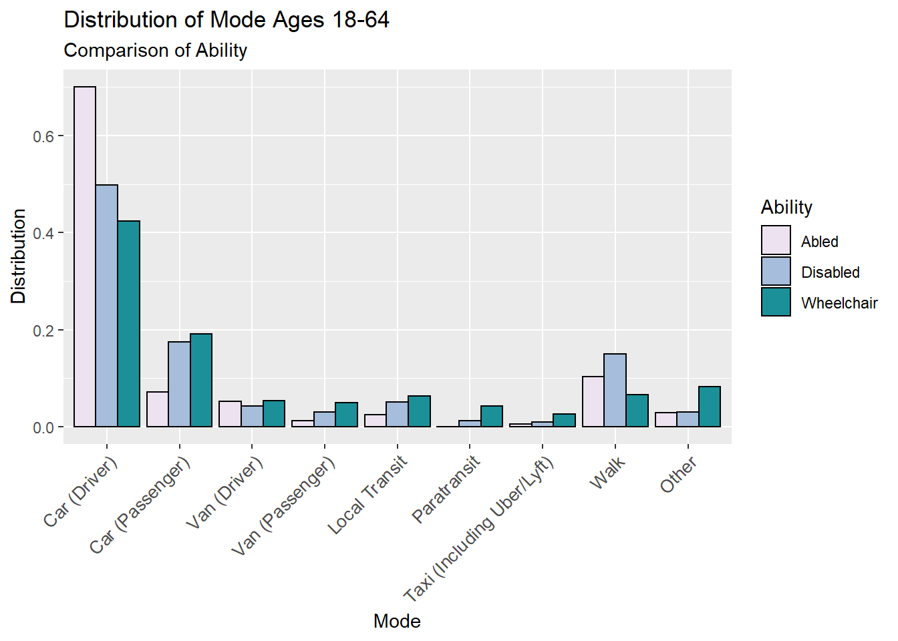

The NHTS reports mode chosen per trip reported. Below is a table that shows the percent distribution of the mode choice for each population of ability. The interactive table allows the user to sort the table by variable to find the most frequent mode chosen by each ability group. As many of the modes are infrequent, many of the modes can be considered “other”.
Distribution of Mode Choice
# This table includes all modes. Distribution is of weighted population.
persons_trips %>% group_by(Ability, trptrans) %>%
summarise(Survey = n(),
population = sum(wtperfin)) %>%
mutate(Population = population,
`Distribution(%)` = round(population/sum(population)*100, 1),
Mode = as_factor(trptrans)) %>%
select(Ability, Mode, `Distribution(%)`) %>%
spread(Ability, `Distribution(%)`) %>% datatable()As some of the modes are irrelevant to the study, the mode choices will be aggregated into categories. The NHTS asks respondents if they were drivers or passengers on their trip, and this information is important as many wheelchair-dependent individuals may rely on others for private transportation. The following modes were highlighted as most relevant.
persons_trips %>% mutate(Mode = case_when(psgr_flg == "02" & trptrans == "03" | trptrans == "04" | trptrans == "06" ~ "Car (Driver)",
psgr_flg == "01" & trptrans == "03" | trptrans == "04" | trptrans == "06" ~ "Car (Passenger)",
psgr_flg == "02" & trptrans == "05" ~ "Van (Driver)",
psgr_flg == "01" & trptrans == "05" ~ "Van (Passenger)",
trptrans == "01" ~ "Walk",
trptrans == "12" ~ "Paratransit",
trptrans == "17" ~ "Taxi (Including Uber/Lyft)",
trptrans == "11" | trptrans == "16" ~ "Local Transit",
trptrans == "07" | trptrans == "08" | trptrans == "09" | trptrans == "10" | trptrans == "14" | trptrans == "15" | trptrans == "18" | trptrans == "19" | trptrans == "20" | trptrans == "97" | trptrans == "02" | trptrans == "13" ~ "Other"),
Mode = fct_relevel(Mode, "Car (Driver)", "Car (Passenger)", "Van (Driver)", "Van (Passenger)", "Local Transit", "Paratransit", "Taxi (Including Uber/Lyft)", "Walk", "Other")) %>%
group_by(Ability, Mode) %>%
summarise(Population = sum(wtperfin)) %>%
as_factor() %>%
mutate(Distribution = Population/sum(Population)) %>%
ggplot(aes(x = Mode, y = Distribution)) +
geom_col(aes(fill = Ability), colour = "Black", position = "dodge") +
ggtitle("Distribution of Mode Ages 18-64", "Comparison of Ability") +
labs(x = "Mode", y = "Distribution") +
scale_fill_brewer(palette = "PuBuGn", direction = 2) +
theme(axis.text.x = element_text(size = 10,
angle = 45,
hjust = 1,
vjust = 1))